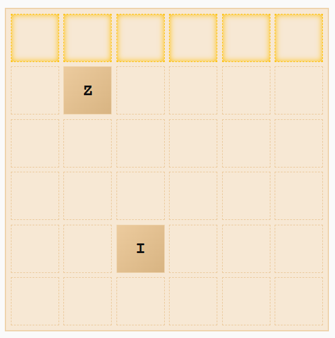

View Live GitHub Demo: WordBlocks Game
Context: Combining the fluid sliding mechanics of 2048 with the strategic word-building gameplay of Scrabble, WordBlocks is a web-based arcade puzzle game built using HTML, CSS, and vanilla JavaScript. Developed to explore custom game loop logic and interactive canvas mechanics, the game calls for players to shift letter tiles across a 6x6 grid using keyboard directional controls or mobile touch swipes to form words before the board is full. The core gameplay is enhanced by special tile mechanics— such as wildcards (that simulate the blank tiles in Scrabble) and double-letter blocks— alongside a multi-layered scoring engine that rewards word length, rare letters (Q, Z, X), "Hot Zone" line clears, and intersecting word cross-multipliers. To give players a final chance before the grid fills up, WordBlocks contains a targeted 2x2 Bomb power-up that clears the grid of any letters. When no moves remain, an automated endgame sweep algorithm thoroughly evaluates rows, columns, and diagonals to score any remaining valid words.
Goal: To create a dynamic, interactive gaming experience by combining the sliding mechanics of 2048 with the strategic word-building gameplay of Scrabble, adding custom rules and mechanics to build a unique digital experience.
Process & Iterations:
Along with originally consulting Claude AI to aid with initial concept planning and gameplay rule structuring, it was also utilized to kickstart the engineering phase as an architectural sounding board for early data structures and debugging complex array-shifting edge cases. From there, the core gameplay loops, scoring multipliers, and UI integrations were manually written, tested, and refined.

Step 1
Built the foundational 6x6 board, programmed directional input controls (arrow keys, WASD, and mobile touch swipes), and translated 2048 sliding mechanics to shift letter tiles seamlessly across the canvas before the board fills up

Step 2
Developed the primary gameplay validation loop, checking connected letter combinations against valid dictionary words. Also developed an intricate scoring system that factors in word length, rare-letter multipliers (Q, Z, X), dynamic "Hot Zone" line clears, and intersecting cross multipliers.

Step 3
Introduced more strategic play by implementing Scrabble-inspired wildcards (?) and double-letter blocks (EE, OO, TT). Also added a targeted 2x2 Bomb power-up for crowded grids, and programmed an automated endgame sweep algorithm to scan rows, columns, and diagonals to score remaining words when no moves remain.
The Challenges:
- Translating 2048 Sliding Mechanics to Letter Tiles: Adapting the directional tile-sliding mechanics of 2048 so that it seamlessly handles letter tiles, wildcard tiles, and grid capacity limits without breaking responsive web performance
- Complex Multi-Tiered Scoring Logic: Developing and programming a complex scoring matrix that concurrently calculates word length, rare-letter bonuses, "Hot Zone" line clears, and intersecting cross-multipliers.
- Automated Endgame State Sweep: Programming an automated sweep algorithm capable of scanning rows, columns, and diagonals to evaluate and score remaining valid words the moment no moves remain on the board.
Key Features & Highlights:
- Hybrid Gameplay Mechanic: Uniquely merges the sliding tile mechanics of 2048 with the strategic word-building of Scrabble
- Custom Scrabble-Inspired Special Tiles: Features versatile wildcard tiles where players pick target letters, and double-letter tiles to increase scoring.
- Interactive Controls & Responsive Canvas: Created input controls for both desktop and mobile via arrow keys, WASD, and touch-swipe gestures.
- 2x2 Bomb Power-Up: Provides players with a second chance during a crowded board, allowing users to target a 2x2 area to clear.
- Automated Endgame Sweep: Features an automatic post-game scanning algorithm that sweeps through rows, columns, and diagonals to catch and score remaining words when the board fills up.